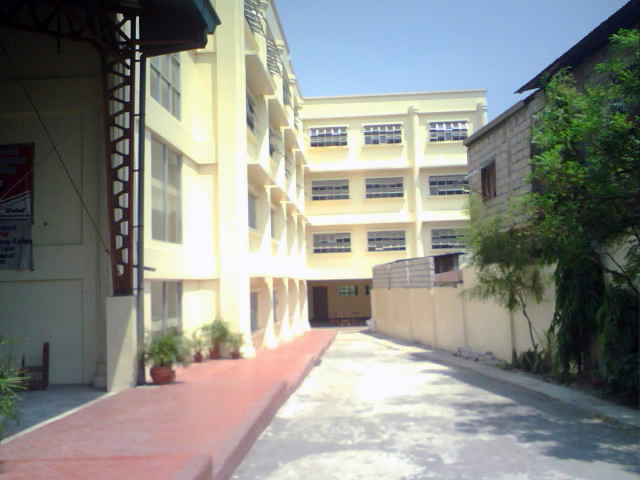

General Tiburcio de Leon National High School
About Us
The DepEd Vision
We dream of Filipinos
who passionately love their country
and whose values and competencies
enable them to realize their full potential
and contribute meaningfully to building the nation.
As a learner-centered public institution,
the Department of Education
continuously improves itself
to better serve its stakeholders.
The DepEd Mission
To protect and promote the right of every Filipino to quality, equitable, culture-based, and complete basic education where:
Students learn in a child-friendly, gender-sensitive, safe, and motivating environment.
Teachers facilitate learning and constantly nurture every learner.
Administrators and staff, as stewards of the institution, ensure an enabling and supportive environment for effective learning to happen.
Family, community, and other stakeholders are actively engaged and share responsibility for developing life-long learners.
Our Core Values
Maka-Diyos
Maka-tao
Makakalikasan
Makabansa
Our Mandate
The Department of Education was established through the Education Decree of 1863 as the Superior Commission of Primary Instruction under a Chairman. The Education agency underwent many reorganization efforts in the 20th century in order to better define its purpose vis a vis the changing administrations and charters. The present day Department of Education was eventually mandated through Republic Act 9155, otherwise known as the Governance of Basic Education act of 2001 which establishes the mandate of this agency.
The Department of Education (DepEd) formulates, implements, and coordinates policies, plans, programs and projects in the areas of formal and non-formal basic education. It supervises all elementary and secondary education institutions, including alternative learning systems, both public and private; and provides for the establishment and maintenance of a complete, adequate, and integrated system of basic education relevant to the goals of national development.
History of General Tiburcio de Leon National High School


General Tiburcio de Leon National High School, also known as Gen. T. de Leon National High School or GTDNHS is a public national high school in Valenzuela, Philippines. It is under the supervision of the Division and City Schools – Valenzuela. Founded in 1969, the school had first served as an annex to Valenzuela Municipal High School. Since 1997, it had become a fully independent high school in Valenzuela. Its location has been moved several times, from Gen. T. de Leon Elementary School, to Tañada Subdivision to its present location in Mercado St. near T. Bugallion Bridge.
Annex
Gen. T. de Leon National High School was founded in 1969 under the school extension name Valenzuela Municipal High School—Gen. T. de Leon Annex. Former Valenzuela municipal mayor Gerardo Angeles created the school, more generally of barrio high schools in Valenzuela. Through his effort, the VMHS-Gen. T. de Leon Annex was put up at Gen. T. de Leon Elementary School compound under Valenzuela Municipal High School, whose principal then was Josefina Avendaño-Lisazo.
There were three classrooms (Marcos Type Building) given to the high school, two were borrowed from the elementary and the barangay hall inside the elementary compound was used as a classroom. Ana D. Cruz was the first chairperson designated to look over the high school. From 1976 to 1984, Mrs. Rosario Tolentino – Santos was appointed as Head Teacher.
Transfer of Location
In 1984, during the term of Adalia Villasfer as the head teacher, the annex was transferred to a 1,533 sq. m. lot at Karen St., Tañada Subdivision, donated by the Filipino Chinese Chamber of Commerce. Seven classrooms were built through the cooperation and support of the Parents-Teachers Association headed by its president Rodrigo Dimagiba.
Major Improvements
When Villasfer resigned, Bernardina Echaluce assumed office as officer-in-charge of the school. Julita Cayanan took over in 1991 and the student population started to increase. Efren H. Tanfelix became the Secondary School Head of GTDLNHS in 1992. Under his administration, a three storey-building with 12 classrooms was donated by the national government through the effort of former second district representative Antonio M. Serapio.
On November 1, 1997, the school became fully independent by virtue of the Republic Act 6655.
Present
In 2005, there had been a major reshuffling of principals in Valenzuela high schools, which appointed Salvacion V. David to be the new principal of the school. The present administration of David initiated significant changes in physical development, staff improvement, and pursuit of quality education. During her term, the school re-transferred to its newer and larger location in Mercado St. near T. Bugallon Bridge. The school building, which was constructed early 2006, was first used in 2007–2008 school year and was inaugurated on December 11, 2007.[2] The acquisition of the new site is a joint effort of David, former barangay captain Alfredo Caiña, and the members of the Local School Board, which includes mayor Sherwin T. Gatchalian, former schools division superintendent Dr. Alma Bella O. Bautista, and second district councilors Lorena Natividad-Borja and Kate Galang.
Additional School Building
In early 2008, another school building in the same location was constructed to further expand the school for the growing population of the school.[citation needed] In the 2009–2010 school year, the newly built school building was initially in used for all 4th year sections and some 3rd year sections and is now fully functional this school year.